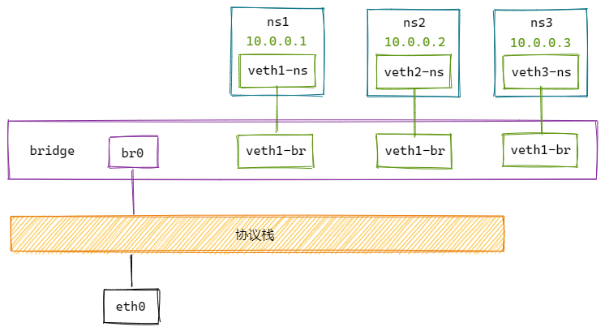

Bridge
两个netns可以通过veth pair连接，两个以上netns相互连接，就需要使用bridge了。
Linux bridge有多个端口，数据可以从任何端口进来，进来之后从哪个口出去则取决于目的MAC地址。
网桥是一种以独立于协议的方式将两个以太网段连接在一起的方式。数据包时基于以太网地址转发的，而不是IP地址。由于转发是在L2完成的，因此所有协议都可以通过网桥透明地传输。
实验

# 创建bridge并启用
ip link add name br0 type bridge
ip link set br0 up
# 创建netns
ip netns add ns1
ip netns add ns2
ip netns add ns3
# 创建veth-pair
ip link add veth1-ns type veth peer name veth1-br
ip link add veth2-ns type veth peer name veth2-br
ip link add veth3-ns type veth peer name veth3-br
# 将veth的一端移动到netns中
ip link set veth1-ns netns ns1
ip link set veth2-ns netns ns2
ip link set veth3-ns netns ns3
# 给netns中的veth配置IP并启用
ip netns exec ns1 ip addr add 10.0.0.1/24 dev veth1-ns
ip netns exec ns1 ip link set veth1-ns up
ip netns exec ns2 ip addr add 10.0.0.2/24 dev veth2-ns
ip netns exec ns2 ip link set veth2-ns up
ip netns exec ns3 ip addr add 10.0.0.3/24 dev veth3-ns
ip netns exec ns3 ip link set veth3-ns up
# 将veth的另一端启动并挂载到bridge上
ip link set veth1-br up
ip link set veth2-br up
ip link set veth3-br up
ip link set dev veth1-br master br0
ip link set dev veth2-br master br0
ip link set dev veth3-br master br0
# 测试连通性
ip netns exec ns1 ping 10.0.0.2
ip netns exec ns1 ping 10.0.0.3
ip netns exec ns2 ping 10.0.0.3
源码分析
bridge的源码在net/bridge下
数据结构
#define ETH_ALEN 6 /* Octets in one ethernet addr */
// 网桥ID
struct bridge_id {
unsigned char prio[2]; // 网桥优先级
unsigned char addr[ETH_ALEN]; // MAC地址
};
// MAC地址
struct mac_addr {
unsigned char addr[ETH_ALEN];
};
struct net_bridge_fdb_key {
mac_addr addr;
u16 vlan_id;
};
// 转发数据库的记录项。网桥所学到的每个MAC地址都有这样一个记录。（记录MAC地址和网桥端口的映射关系）
struct net_bridge_fdb_entry {
struct rhash_head rhnode; // 转发数据库表节点
struct net_bridge_port *dst; // 网桥端口
struct net_bridge_fdb_key key; // MAC地址
struct hlist_node fdb_node; // 节点
unsigned long flags;
...
struct rcu_head rcu;
};
// 网桥端口
struct net_bridge_port {
struct net_bridge *br; // 所属网桥设备对象
struct net_device *dev; // 网络接口设备对象
struct list_head list; // 链表节点
u8 priority; // 端口优先级
u8 state; // 端口状态
u16 port_no; // 端口号
port_id port_id; // 端口ID（由priority和port_no计算得到）
...
};
struct net_bridge {
struct net_device *dev; // 网络接口设备对象
struct rhashtable fdb_hash_tbl; // 转发数据库（节点：net_bridge_fdb_entry）
struct list_head port_list; // 端口列表（节点：net_bridge_port）
struct hlist_head fdb_list; // fdb_create时，挂不到fdb_hash_tbl上，则会挂到fdb_list上（节点：net_bridge_fdb_entry）
...
};
模块初始化
static int __init br_init(void)
{
...
// 注册ioctl钩子
brioctl_set(br_ioctl_deviceless_stub);
...
}
static int (*br_ioctl_hook) (struct net *, unsigned int cmd, void __user *arg);
void brioctl_set(int (*hook) (struct net *, unsigned int, void __user *))
{
mutex_lock(&br_ioctl_mutex);
br_ioctl_hook = hook;
mutex_unlock(&br_ioctl_mutex);
}
int br_ioctl_deviceless_stub(struct net *net, unsigned int cmd, void __user *uarg)
{
...
switch (cmd) {
case SIOCBRADDBR:
case SIOCBRDELBR:
{
...
if (cmd == SIOCBRADDBR)
ret = br_add_bridge(net, buf);
else
ret = br_del_bridge(net, buf);
}
}
...
}
注册ioctl响应操作，
- 添加网桥：
br_add_bridge； - 删除网桥：
br_del_bridge；
创建 bridge
int br_add_bridge(struct net *net, const char *name)
{
struct net_device *dev;
int res;
// 申请网络设备
dev = alloc_netdev(sizeof(struct net_bridge), name, NET_NAME_UNKNOWN,
br_dev_setup);
...
// 注册网络设备
res = register_netdevice(dev);
...
}
static const struct net_device_ops br_netdev_ops = {
// 设置发包函数回调
.ndo_start_xmit = br_dev_xmit,
// 设置dev ioctl
.ndo_do_ioctl = br_dev_ioctl,
};
void br_dev_setup(struct net_device *dev)
{
struct net_bridge *br = netdev_priv(dev);
...
dev->netdev_ops = &br_netdev_ops;
...
br->dev = dev;
INIT_LIST_HEAD(&br->port_list);
INIT_HLIST_HEAD(&br->fdb_list);
// 定时清理任务
INIT_DELAYED_WORK(&br->gc_work, br_fdb_cleanup);
}
int br_dev_ioctl(struct net_device *dev, struct ifreq *rq, int cmd)
{
struct net_bridge *br = netdev_priv(dev);
switch (cmd) {
...
case SIOCBRADDIF:
case SIOCBRDELIF:
return add_del_if(br, rq->ifr_ifindex, cmd == SIOCBRADDIF);
}
...
}
注册dev ioctl响应操作，
- 给网桥添加端口：
br_add_if； - 给网桥删除端口：
br_del_if；
给网桥添加端口
int br_add_if(struct net_bridge *br, struct net_device *dev,
struct netlink_ext_ack *extack)
{
struct net_bridge_port *p;
// 创建新的网桥端口
p = new_nbp(br, dev);
// 注册接收处理回调（br_handle_frame）
err = netdev_rx_handler_register(dev, br_get_rx_handler(dev), p);
// 将网桥端口挂到port_list链表上
list_add_rcu(&p->list, &br->port_list);
// 这里会调用到dev_set_promiscuity，将网桥端口相关的NIC设置为混杂模式
nbp_update_port_count(br);
// 插入net_bridge_fdb_entry结点到fdb_hash_tbl
br_fdb_insert(br, p, dev->dev_addr, 0);
}
int netdev_rx_handler_register(struct net_device *dev,
rx_handler_func_t *rx_handler,
void *rx_handler_data)
{
...
/* Note: rx_handler_data must be set before rx_handler */
rcu_assign_pointer(dev->rx_handler_data, rx_handler_data);
rcu_assign_pointer(dev->rx_handler, rx_handler);
...
}
接收数据
static int __netif_receive_skb_core(struct sk_buff **pskb, bool pfmemalloc,
struct packet_type **ppt_prev)
{
...
// 获取接收处理回调
rx_handler = rcu_dereference(skb->dev->rx_handler);
if (rx_handler) {
...
// 执行接收处理回调（br_handle_frame）
switch (rx_handler(&skb)) {
...
}
}
...
}
static rx_handler_result_t br_handle_frame(struct sk_buff **pskb)
{
struct net_bridge_port *p;
...
switch (p->state) {
// 判断端口状态
case BR_STATE_FORWARDING:
case BR_STATE_LEARNING:
if (ether_addr_equal(p->br->dev->dev_addr, dest))
skb->pkt_type = PACKET_HOST;
// 执行NF_BR_PRE_ROUTING上的钩子，然后调用br_handle_frame_finish
return nf_hook_bridge_pre(skb, pskb);
...
}
}
int br_handle_frame_finish(struct net *net, struct sock *sk, struct sk_buff *skb)
{
...
// 更新转发数据库
if (p->flags & BR_LEARNING)
br_fdb_update(br, p, eth_hdr(skb)->h_source, vid, 0);
switch (pkt_type) {
case BR_PKT_MULTICAST:
...
break;
case BR_PKT_UNICAST:
// 单播，根据目的MAC地址找到net_bridge_fdb_entry
dst = br_fdb_find_rcu(br, eth_hdr(skb)->h_dest, vid);
break;
...
}
if (dst) {
unsigned long now = jiffies;
// 如果dst被设置为本地，则直接向上传递处理
if (test_bit(BR_FDB_LOCAL, &dst->flags))
return br_pass_frame_up(skb);
// 将数据包转发给指定端口
br_forward(dst->dst, skb, local_rcv, false);
} else {
if (!mcast_hit)
// 对网桥上的每个端口扩散数据包
br_flood(br, skb, pkt_type, local_rcv, false);
else
// 对多个目的地址进行扩散数据包
br_multicast_flood(mdst, skb, local_rcv, false);
}
if (local_rcv)
// 本地接收则向上传递数据包
return br_pass_frame_up(skb);
...
}
将数据包转发给指定端口
void br_forward(const struct net_bridge_port *to,
struct sk_buff *skb, bool local_rcv, bool local_orig)
{
...
__br_forward(to, skb, local_orig);
...
}
static void __br_forward(const struct net_bridge_port *to,
struct sk_buff *skb, bool local_orig)
{
...
indev = skb->dev;
// 设置数据包的dev为目的端口dev
skb->dev = to->dev;
if (!local_orig) {
// 数据包不是来自本地，则走forward
br_hook = NF_BR_FORWARD;
net = dev_net(indev);
...
} else {
// 数据包来自本地，则走local_out
br_hook = NF_BR_LOCAL_OUT;
net = dev_net(skb->dev);
...
}
// 执行对应钩子流程
NF_HOOK(NFPROTO_BRIDGE, br_hook,
net, NULL, skb, indev, skb->dev,
br_forward_finish);
}
int br_forward_finish(struct net *net, struct sock *sk, struct sk_buff *skb)
{
// 执行NF_BR_POST_ROUTING钩子流程
return NF_HOOK(NFPROTO_BRIDGE, NF_BR_POST_ROUTING,
net, sk, skb, NULL, skb->dev,
br_dev_queue_push_xmit);
}
int br_dev_queue_push_xmit(struct net *net, struct sock *sk, struct sk_buff *skb)
{
...
// 走队列发送
dev_queue_xmit(skb);
...
}
dev_queue_xmit最终会调用函数指针ndo_start_xmit进行发送，
- 可能调用NIC设备驱动程序回调
- 可能调用网桥设备驱动程序回调（br_dev_xmit）
将数据包转发给网桥所有端口
void br_flood(struct net_bridge *br, struct sk_buff *skb,
enum br_pkt_type pkt_type, bool local_rcv, bool local_orig)
{
struct net_bridge_port *prev = NULL;
struct net_bridge_port *p;
// 遍历网桥上的端口列表
list_for_each_entry_rcu(p, &br->port_list, list) {
...
prev = maybe_deliver(prev, p, skb, local_orig);
...
}
...
// 转发包到指定端口
__br_forward(prev, skb, local_orig);
...
}
netdev_tx_t br_dev_xmit(struct sk_buff *skb, struct net_device *dev)
{
dest = eth_hdr(skb)->h_dest;
if (is_broadcast_ether_addr(dest)) {
// 如果是广播地址，则调用br_flood进行数据包扩散
br_flood(br, skb, BR_PKT_BROADCAST, false, true);
} else if (is_multicast_ether_addr(dest)) {
// 如果是多播地址，则调用br_flood进行数据包扩散
br_flood(br, skb, BR_PKT_MULTICAST, false, true);
} else if ((dst = br_fdb_find_rcu(br, dest, vid)) != NULL) {
// 如果是单播地址，则调用br_forward对指定端口转发
br_forward(dst->dst, skb, false, true);
} else {
br_flood(br, skb, BR_PKT_UNICAST, false, true);
}
...
}